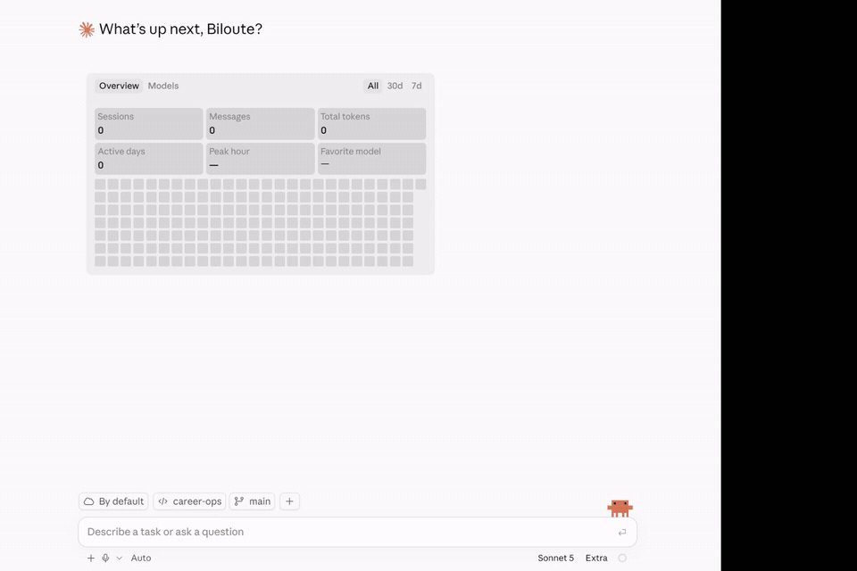

Le parcours auto-pipeline, étape par étape
- Claude Desktop doit être connecté à GitHub via MCP (à configurer dans Paramètres → Connecteurs).
- Forkez le dépôt sur GitHub :
Forker sur GitHub - Ouvrez ensuite le mode Claude Code.
- Configurez Claude Code pour créer un environnement isolé (Cloud).

Vous envoyez le lien d'une offre avec votre CV en pièce jointe.
Je veux postuler à https://<site-job>/.
Mon CV est en pièce-jointe.
Le copilote vous pose 5 questions sur votre recherche — salaire visé, postes cibles, autorisation de travail, etc. — pour calibrer toutes vos futures évaluations.
Il vérifie que l'offre est toujours active, puis compare le poste à votre profil, exigence par exigence.
Vous recevez un score sur 5, avec les raisons qui jouent pour vous et les risques à connaître.
Il génère aussi un rapport d'analyse complet, en page HTML — le score, les raisons, les risques, tout est dedans.
Le copilote prépare aussi un CV et une lettre de motivation adaptés à cette offre précise, prêts en PDF — sans étape supplémentaire de votre part.
Ce qu'il faut savoir avant de lui faire confiance.
Ce qu'il fait, ce qu'il ne fera jamais
Toujours
- Vous dire franchement si un poste ne vous correspond pas
- Citer votre CV mot pour mot, jamais d'expérience inventée
- Vous laisser relire et corriger chaque document
- Générer un rapport d'analyse HTML pour chaque offre évaluée
Jamais
- Envoyer une candidature à votre place
- Inventer une compétence ou un chiffre que vous n'avez pas
- Vous pousser à postuler à un poste sous votre niveau minimum
- Partager vos documents en dehors de votre espace de travail
En cas de doute.
Questions fréquentes
Dois-je tout réécrire moi-même ?
Non. Le copilote prépare un brouillon complet du CV et de la lettre. Vous ajustez uniquement ce que vous voulez changer, rien n'est envoyé sans votre relecture.
Et si l'offre ne me correspond pas du tout ?
Il vous le dit dès le score, avant que vous ne perdiez du temps sur des documents pour un poste qui ne vous convient pas.
Puis-je lui demander de changer ce qu'il cible ?
Oui. Dites-lui simplement ce que vous cherchez — un autre type de poste, une autre ville, une fourchette de salaire différente — et il ajuste ses évaluations en conséquence.